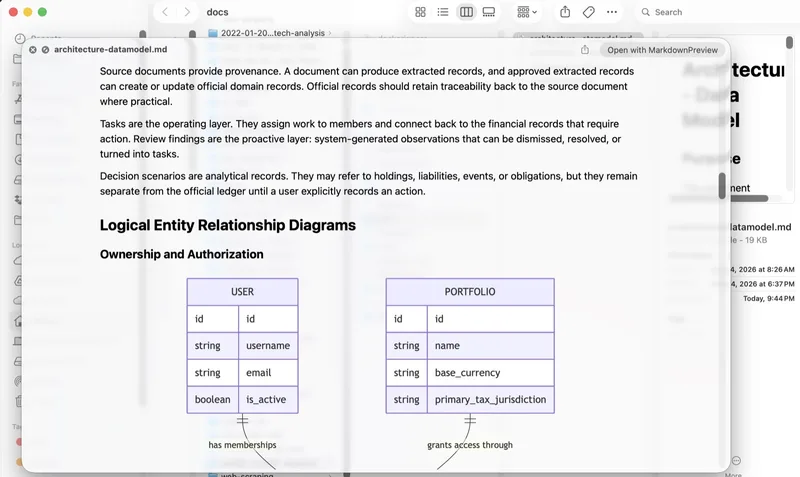

For macOS Finder
Preview Markdown with the Space bar.
Markdown Preview is a lightweight Quick Look extension for rendering README files, notes, and local documentation without opening an editor.

Supported Markdown
Built for everyday project files.
The renderer covers the Markdown patterns most often found in READMEs, notes, specs, and local technical docs.
-
Readable structureHeadings, lists, blockquotes, links, tables, and inline formatting.
-
Code and diagramsFenced code blocks and Mermaid diagrams render inside the preview.
-
Local contextLocal image references display alongside the text when Finder can access them.
Install
Download, move to Applications, enable Quick Look.
Open the DMG
Download the disk image and drag Markdown Preview into Applications.
Launch once
Open the app so macOS can register the bundled Quick Look extension.
Enable it
Turn on Markdown Preview in System Settings under Login Items & Extensions.
Markdown Preview for macOS
Signed and notarized for distribution outside the Mac App Store.